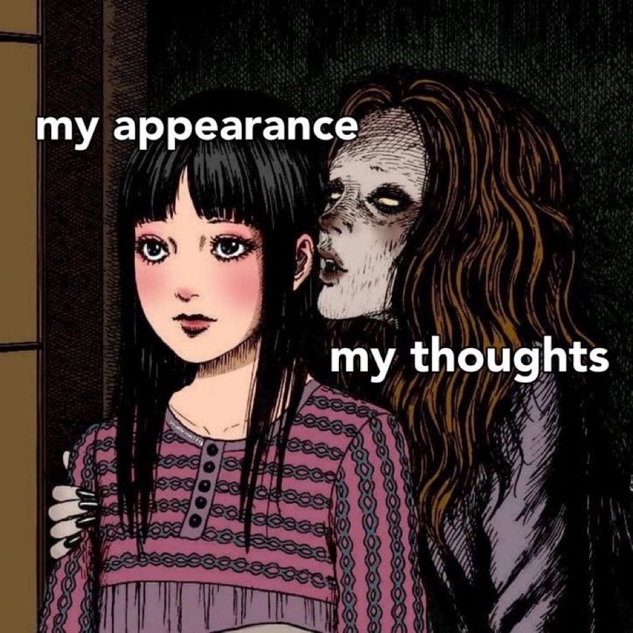

𝐋𝐢𝐟𝐞

Hehe
"You ruin your life by tolerating it.
At the end of the day you should be excited to be alive.
When you settle for anything less than what you innately desire,
you destroy the possibility that lives inside of you,
and in that way you cheat both yourself and the world of your potential.
The next Michelangelo could be sitting behind a laptop right now writing an invoice for paperclips,
because it pays the bills,
or because it is comfortable,
or because he can tolerate it.
Do not let this happen to you.
Do not ruin your life this way.
Life and work,
and life and love,
are not irrespective of each other.
They are intrinsically linked.
We have to strive to do extraordinary work,
we have to strive to find extraordinary love.
Only then will we tap into an extraordinarily blissful life."